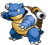

-
Bulbasaur

- Grama
- Veneno
Há uma semente de planta em suas costas desde o dia que este Pókemon nasce. A semente cresce lentamente.
-
Ivysaur

- Grama
- Veneno
Quando o bulbo em suas costas cresce, parece perder a capacidade de ficar de pé em suas patas traseiras.
-
Blastoise
- Agua
Ele esmaga seu inimigo sob seu corpo pesado para causar desmaios. Em uma pitada, ele se retirará dentro de sua concha.
-
Caterpie

- Inseto
Para proteção, ele libera um fedor horrível da antena em sua cabeça para afastar os inimigos.
-
Charizard

- Fogo
Ele cospe fogo que é quente o suficiente para derreter pedregulhos. Pode causar incêndios florestais soprando chamas.
-
Charmander

- Fogo
Tem preferência por coisas quentes. Quando chove, diz-se que o vapor jorra da ponta de sua cauda.
-
Charmeleon

- Fogo
Tem uma natureza bárbara. Na batalha, ele chicoteia sua cauda ardente e corta com garras afiadas.
-
Squirtle

- Agua
Quando ele retrai seu longo pescoço em sua concha, ele esguicha água com força vigorosa.
-
Venusaur

- Veneno
- Grama
Sua planta floresce quando está absorvendo energia solar. Ele permanece em movimento para buscar a luz solar.
-
Wartortle

- Agua
É reconhecido como um símbolo de longevidade. Se sua concha tem algas, esse Wartortle é muito antigo.